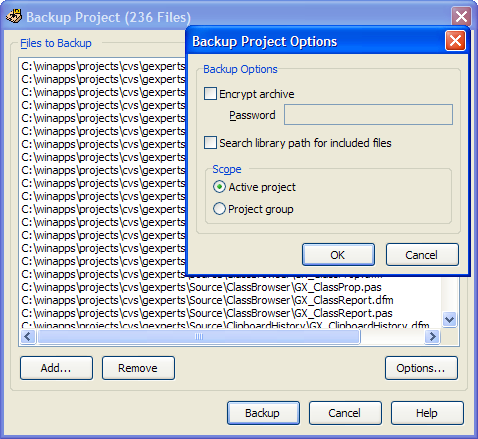
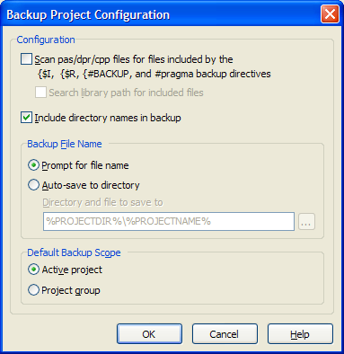

Backup Project |
  
|
Backup Project |
|
The project backup expert enables you to backup an entire project to a zip file. Always save all files in your project before running this expert or your latest changes will not be included in the zip archive. When this expert is executed, a list of all files in the project appears in the dialog. You can add or remove files from the list using the Add and Remove buttons. To backup the project, click the Backup button.
Quick-access options such as password protection for your archive, the backup scope, and an option to search for included files on the library path are available via the Options button. These options are not saved between invocations of the expert; you must use the Backup Project Configuration dialog described below to set the default options.

The default configuration options are set from the GExperts Configuration window. You can configure the backup project expert to scan all of the project's source files for resource files and other files which should be included in the backup. These files are indicated by the $I, $R, $INCLUDE, and $RESOURCE directives for Delphi, and the included files can be anywhere in the project directory or the IDE/project library path. The backup can also default to backup the project group or just the current project.
If you have enabled the option to scan for included files, you can force certain files to be included in the backup by adding a command directive line to the interface of any unit in the project. For example, if you have a PAS file that always accesses a certain INI file and you want it included in the backup, add a {#BACKUP MYINI.INI} line to the top of the file and from then on GExperts will include it in the backup. This expert has support for wildcards and paths in the filename such as: {#BACKUP *.INI}, and {#BACKUP 'C:\Program Files\test.dat'}. For C++ files, use the syntax #pragma backup Docs.txt instead.

The expert can prompt for a file name for each backup, or you can instruct the expert automatically backup to a specified directory and file without having to specify a file name each time. Various substitution macros are available that allow you to specify the directory and filename used, for example:
%PROJECTDIR%Backup\%YEAR%-%MONTH%-%DAY% will produce a backup file in a subdirectory called "Backup" off of your main project directory. The filename will consist of the year, month, and day the backup was made.
C:\Backups\%ProjectName%-%DAYSHORTNAME%-%DAY%.zip will produce a backup file named similar to C:\Backups\Project1-Wed-26.zip.